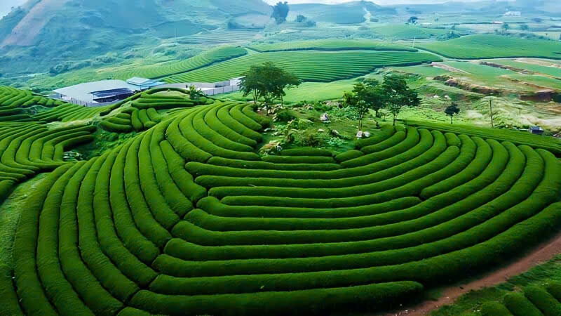
Mộc Châu 2 - 3 ngày
Sinh thái & Nghỉ dưỡng
Cao nguyên Mộc Châu
Vùng bình nguyên đá vôi cận ôn đới ở độ cao trên 1.050m, khí hậu mát mẻ quanh năm cùng đồi chè uốn lượn và thung lũng mận trắng.
Hành trình băng qua những đồi chè bát ngát Mộc Châu, biển mây Tà Xùa bồng bềnh, hệ thống thạch nhũ nguyên sơ Ngũ Động Bản Ôn và bản sắc đồng bào Thái, H'Mông nồng hậu.
Tất cả hình ảnh dưới đây đều là ảnh chụp thực tế địa phương, minh bạch nguồn gốc và bản quyền.

Mộc Châu 2 - 3 ngàyVùng bình nguyên đá vôi cận ôn đới ở độ cao trên 1.050m, khí hậu mát mẻ quanh năm cùng đồi chè uốn lượn và thung lũng mận trắng.
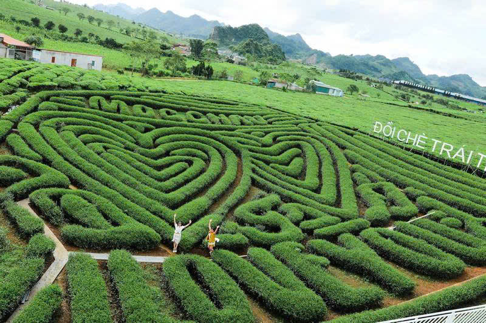
Mộc Châu 2 - 3 giờTuyệt tác đồi chè ô long do chính bàn tay công nhân nông trường tạo dáng trái tim biểu trưng cho tình yêu và sức sống nông nghiệp xanh.
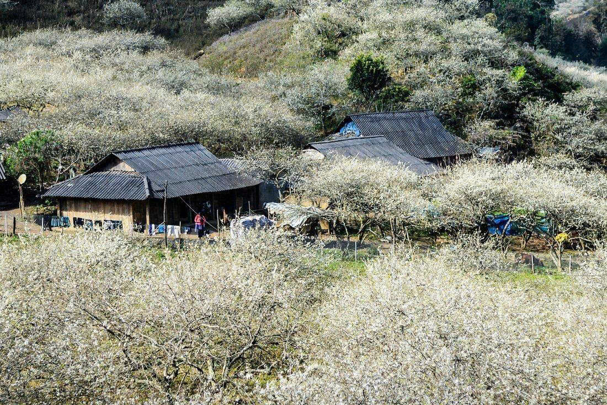
Mộc Châu 3 - 4 giờThung lũng mận hậu lớn nhất Mộc Châu, ngút ngàn sắc trắng tinh khôi vào mùa xuân và trĩu quả chín mọng đỏ au vào tháng 5 hàng năm.
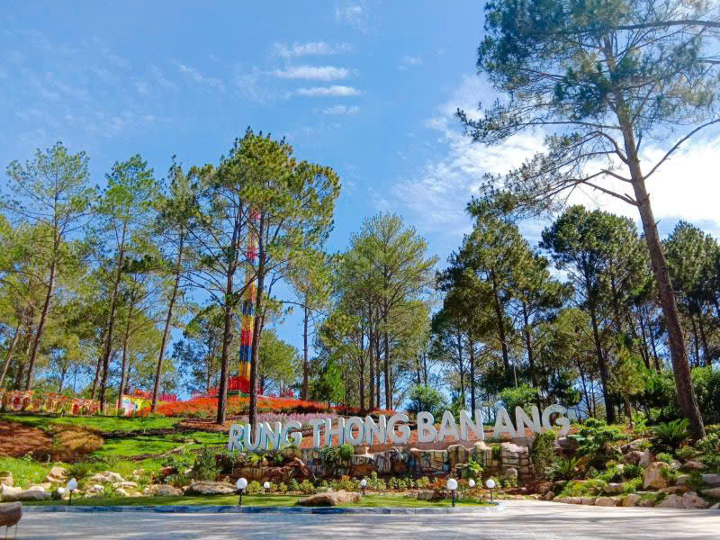
Mộc Châu Nửa ngàyĐược ví như Đà Lạt thu nhỏ của vùng Tây Bắc với rừng thông bạt ngàn soi bóng xuống mặt hồ tự nhiên rộng 5ha và vườn dâu tây đỏ mọng.
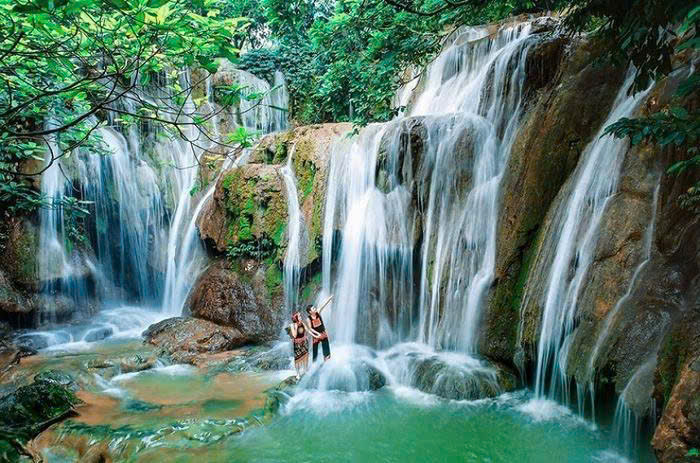
Mộc Châu 2 - 3 giờDòng thác 9 tầng tuôn chảy mềm mại như dải yếm thiếu nữ Thái, gắn liền với huyền tích tình yêu thủy chung son sắt.
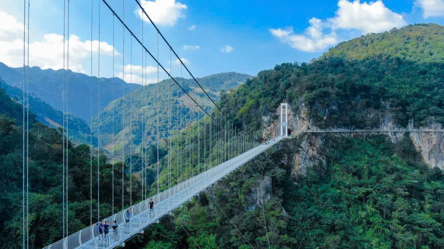
Mộc Châu 3 - 4 giờCầu đi bộ đáy kính dài nhất thế giới được tổ chức Kỷ lục Guinness công nhận (632m), vắt ngang qua hẻm núi sâu 150m.
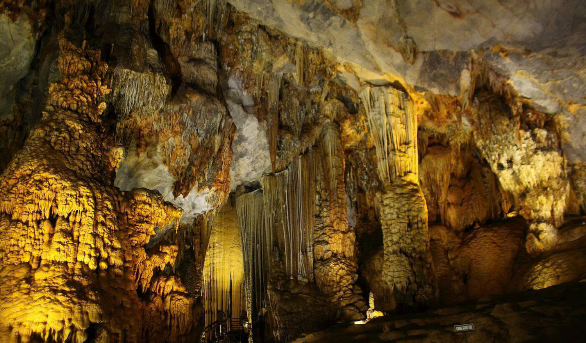
Mộc Châu 3 - 4 giờQuần thể 5 hang động đá vôi nguyên sơ tương ứng với ngũ hành (Kim, Mộc, Thủy, Hỏa, Thổ) ẩn sâu trong rừng nguyên sinh và nương chè Bản Ôn.
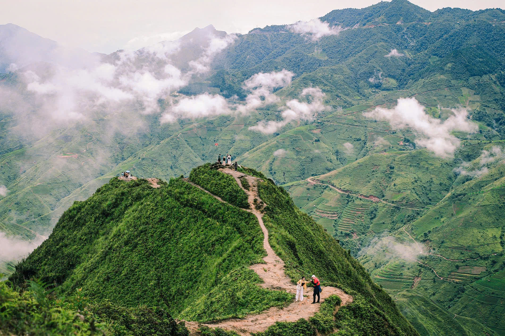
Bắc Yên 2 ngày 1 đêmĐịa điểm săn mây huyền thoại của giới trẻ Việt Nam ở độ cao gần 2.000m với Sống lưng Khủng Long Háng Đồng và Mỏm Cá Heo kỳ vĩ.
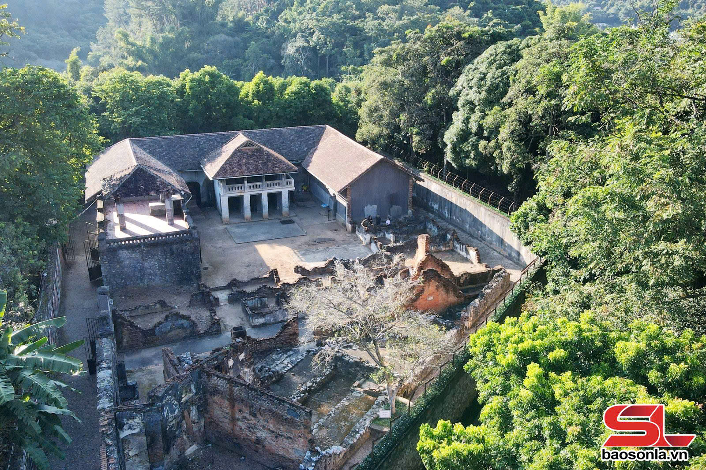
TP. Sơn La 2 giờMinh chứng lịch sử kiên cường của các chiến sĩ cách mạng Việt Nam, nơi biểu tượng cây đào Tô Hiệu bất khuất nở hoa giữa ngục tù.
Ngũ Động Bản Ôn là một quần thể gồm 5 hang động đá vôi tự nhiên tương ứng với thuyết Ngũ Hành (Kim, Mộc, Thủy, Hỏa, Thổ), tọa lạc tại Bản Ôn, thị trấn Nông trường Mộc Châu, tỉnh Sơn La.
Quần thể này được người dân bản địa tình cờ phát hiện sau trận đại hồng thủy lịch sử năm 2006. Cho đến nay, nơi đây vẫn giữ trọn vẹn vẻ hoang sơ, huyền bí, hầu như chưa chịu sự can thiệp của các công trình bê tông hóa hay dịch vụ du lịch thương mại đại trà.
Sau đợt mưa lũ lớn tháng 8 năm 2006 làm xói mòn lớp đất rừng che phủ, những người dân tộc H'Mông và Thái tại Bản Ôn khi đi làm nương chè đã phát hiện ra các cửa hang sâu hun hút phát ra luồng khí mát lạnh.
Khi tiến sâu vào trong, người dân ngỡ ngàng trước những cột nhũ đá khổng lồ lấp lánh như ngọc. Vì quần thể gồm 5 hang động nằm ẩn mình dưới chân các ngọn núi đá vôi liền kề, chính quyền và đồng bào đặt tên là Ngũ Động Bản Ôn, tượng trưng cho sự vững chãi, cân bằng và chở che của đất trời Tây Bắc.
Quá trình kiến tạo địa chất Karst kéo dài hàng chục triệu năm của vùng đá vôi Mộc Châu đã hình thành nên những vòm hang rộng lớn, hệ thống măng đá, cột đá và rèm nhũ đá rủ xuống từ trần hang với vô số hình thù kỳ thú.
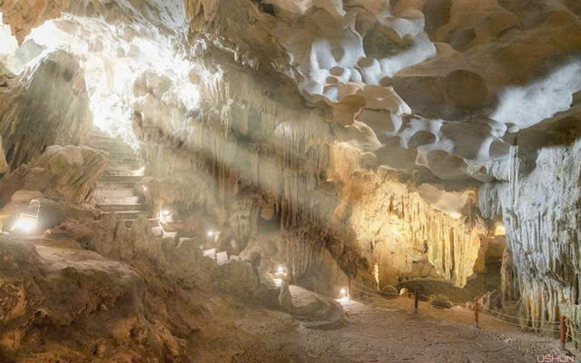
Cận cảnh các vách đá vôi tầng tầng lớp lớp và măng đá tự nhiên trong lòng hang động đá vôi Tây Bắc.Nhiệt độ bên trong hang duy trì ổn định quanh mức 18-21°C quanh năm, mùa hè mát lạnh sảng khoái, mùa đông ấm áp, không khí đối lưu nhờ các khe nứt thông gió tự nhiên trên đỉnh núi.
Đi bộ theo con đường mòn rợp bóng mát, hai bên là những đồi chè cổ thụ xanh mướt ngát hương trước khi chạm đến bìa rừng dẫn vào cửa động.
Hang động lớn nhất và lộng lẫy nhất trong quần thể với vòm trần cao vút, các khối nhũ đá hình đàn chim, rồng bay phượng múa và giếng trời tự nhiên rọi tia nắng lung linh.
Lắng nghe những câu chuyện huyền tích về cánh rừng thiêng do chính các cụ già bản địa kể lại bên ấm trà shan tuyết nóng hổi.
Lộ trình chi tiết: Từ thị trấn Nông trường Mộc Châu, bạn đi theo hướng đồi chè Trái Tim khoảng 10km đến ngã ba Bản Ôn. Từ đây rẽ vào đường đất cấp phối khoảng 5km đến bìa rừng. Sau đó gửi xe tại nhà dân bản và đi bộ trekking khoảng 1,5km vào cửa hang.
Ăn sáng bánh cuốn nóng Mộc Châu, kiểm tra đèn pin đội đầu, giày leo núi và di chuyển đến Bản Ôn.
Check-in tại những luống chè búp non còn đọng sương mai, thuê người dân bản H'Mông dẫn đường.
Chiêm ngưỡng thạch nhũ triệu năm, chụp ảnh giếng trời đá vôi và tận hưởng không khí mát lành tự nhiên.
Nghỉ ngơi tại nhà sàn cộng đồng, thưởng thức gà đồi nướng mắc khén và chè shan tuyết.
Khu vực Ngũ Động Bản Ôn không có hàng quán thương mại hay nhà hàng hiện đại. Du khách nên chuẩn bị trước nước uống đóng chai (tối thiểu 1.5L/người), lương khô hoặc bánh quy.
Sau khi trekking ra ngoài bản, bạn có thể ghé các quán ăn của đồng bào bản địa hoặc trở lại khu vực Đồi chè Trái Tim để thưởng thức:
Độ sáng tối thiểu 300 lumens và pin sạc đầy vì lòng hang hoàn toàn tối đen.
Bắt buộc mang giày có đế cao su bám đất, không đi dép lê hoặc giày cao gót.
Quần áo mau khô, thấm hút mồ hôi để tránh cọ quẹt cành cây và côn trùng rừng.
Nguyên tắc không để lại gì ngoài những dấu chân và không lấy gì ngoài những bức ảnh đẹp.
Hiện tại điểm đến chưa thu vé tham quan chính thức cố định. Tuy nhiên du khách nên gửi xe tại nhà dân bản (khoảng 10.000 - 20.000đ) và bồi dưỡng cho người dân bản dẫn đường (khoảng 100.000 - 200.000đ/nhóm) để ủng hộ kinh tế cộng đồng.
Rất cần thiết! Địa hình rừng nương có nhiều ngã rẽ và các cửa động nằm khuất sau lùm cây cổ thụ rất khó tìm nếu đi lần đầu.
Trong hang có một số cá thể dơi tự nhiên sống trên vách cao, không tấn công người. Bạn chỉ cần chú ý bước chân để tránh trượt ngã trên măng đá ẩm.
Được quy hoạch tối ưu cung đường di chuyển, thời gian ngắm cảnh và kết nối đặc sản địa phương.
Đồi chè Trái Tim → Rừng thông Bản Áng → Thác Dải Yếm → Cầu kính Bạch Long → Làng chè cổ thụ.
🌸 Phù hợp: Gia đình nhiều thế hệ, cặp đôi nghỉ dưỡngĐỉnh Tà Xùa → Sống lưng Khủng Long Háng Đồng → Mỏm Cá Heo → Rừng rêu cổ thụ nguyên sinh.
☁️ Phù hợp: Bạn trẻ đam mê nhiếp ảnh, trekking, săn mâyKhu di tích Nhà tù Sơn La & Cây đào Tô Hiệu → Đền Vua Lê Thái Tông → Thủy điện Sơn La lớn nhất Đông Nam Á.
🏛️ Phù hợp: Du khách yêu thích lịch sử, văn hóa và giáo dụcCánh đồng Mường Chiến → Nhà gỗ pơ mu trăm tuổi → Tắm suối khoáng nóng Bản Lướt tự nhiên.
♨️ Phù hợp: Du khách tìm kiếm sự bình yên, thư giãn phục hồiĐượm nồng hương vị mắc khén, hạt dổi, ớt chỉ thiên và kỹ thuật chế biến truyền thống của đồng bào Thái.
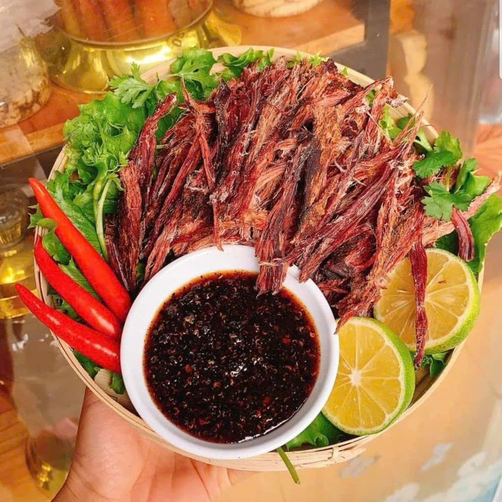
Đặc sản trứ danhTừng thớ thịt trâu tươi được tẩm ướp hạt dổi, mắc khén, ớt gừng rồi hun khói trên bếp củi nhãn đỏ lửa suốt nhiều ngày đêm.
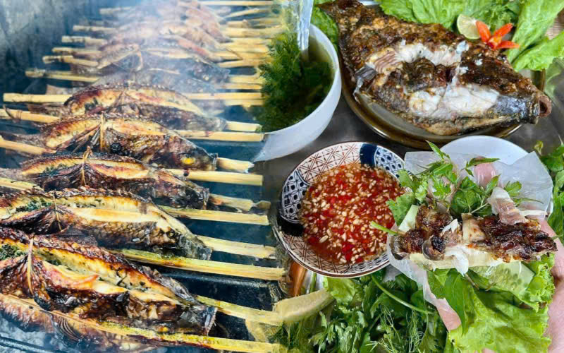
Món ăn linh hồn người TháiCá suối mổ lưng, nhồi rau thơm, hạt mắc khén, gừng xả, gập đôi kẹp thanh tre rồi nướng giòn trên than hồng rực.
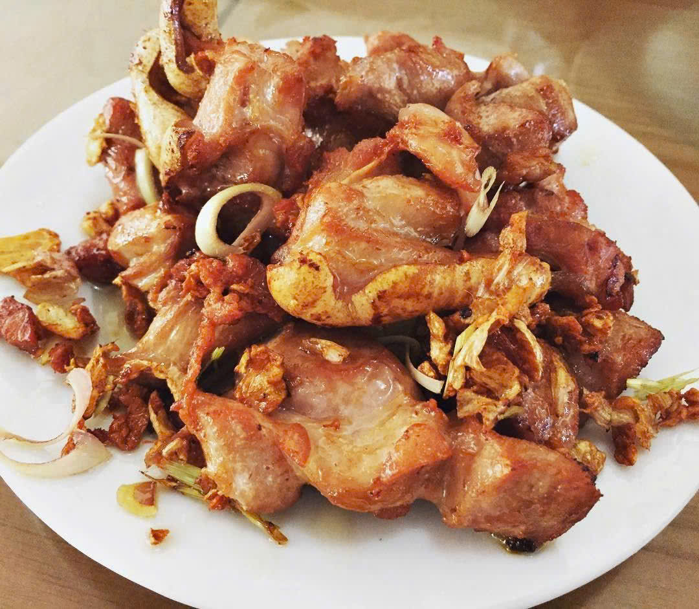
Mộc ChâuThịt bê non chao nhanh qua chảo dầu sôi sùng sục, lớp da giòn sần sật, thớ thịt ngọt mềm chấm cùng nước tương gừng đậm đà.
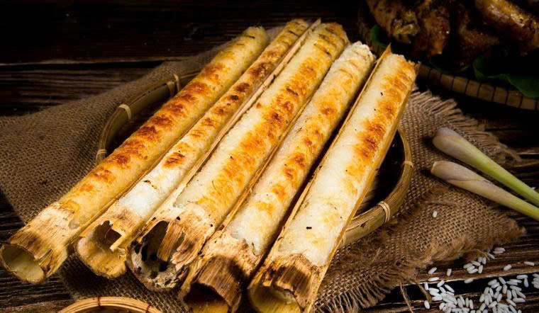
Hương vị núi rừngGạo nếp nương ngâm kỹ, nhồi vào ống nứa tươi rồi nướng trên than hồng, dậy mùi thơm của nếp mới quyện hương nứa non, ăn kèm muối vừng.
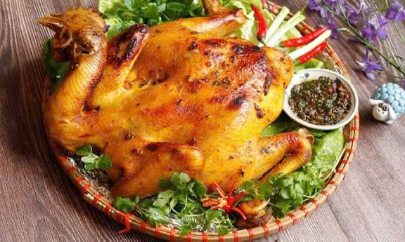
Món nướng bản địaGà đồi thả vườn tẩm mắc khén, hạt dổi, sả và gừng, kẹp tre nướng chậm trên than củi cho da vàng giòn, thịt chắc ngọt thơm nồng.
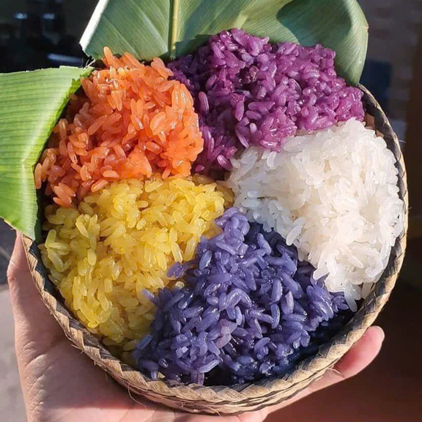
Mộc ChâuNếp nương dẻo thơm đồ trong chõ gỗ, ăn cùng thịt nướng, chẳm chéo hoặc muối vừng, là món sáng quen thuộc của đồng bào vùng cao.
Nơi hội tụ bản sắc văn hóa của 12 dân tộc anh em với nghệ thuật Xòe Thái được UNESCO vinh danh.
Điệu múa dân gian biểu trưng cho tình đoàn kết, khát vọng hòa bình và sự giao hòa giữa đất trời. Vòng xòe càng rộng, tình nghĩa càng bền chặt bên ánh lửa bập bùng.
Diễn ra vào mùa xuân khi hoa ban nở trắng các sườn đồi, lễ hội tạ ơn thầy thuốc, thần linh và chúc cho mùa màng bội thu, bản làng no ấm.
Những đúc kết quan trọng từ các phượt thủ và ban an toàn giao thông tỉnh Sơn La.
Đoạn đèo Thung Khe và dốc Chiềng Đông thường xuyên có sương mù dày đặc. Luôn bật đèn gầm vàng, về số thấp khi đổ dốc (D1/D2) và không rà phanh liên tục.
Mùa hè ngày ấm đêm se lạnh; mùa đông nhiệt độ có thể xuống 5-8°C. Luôn chuẩn bị áo gió cản sương, áo ấm dày và giày thể thao có độ ma sát cao.
Khi vào thăm nhà sàn của đồng bào Thái, xin phép gia chủ trước khi bước lên sàn; không ngồi quay lưng vào bàn thờ tổ tiên và xin phép trước khi chụp ảnh người già.